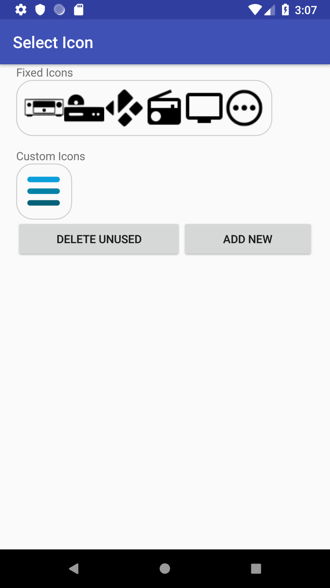

    <div class="container content">
      {% assign prev_page = "Edit Custom Key" %}
      {% assign prev_href = "editcustomkey.html" %}
      {% assign next_page = "Custom Keys" %}
      {% assign next_href = "customkey.html" %}
      {% include usergnav.html %}

      <div class="row">
        <div class="col-lg-7">
          <h2 class="page-title">Change Icons</h2>
          <p>You are able to select/change icons when <a href="activities.html">creating Activities</a>, <a href="editactivity.html">editing Activities</a>, <a href="devices.html">creating Devices</a>, <a href="editdevice.html">editing Devices</a>, <a href="customkey.html">creating Custom Keys</a> and <a href="editkey.html">editing Keys</a>.</p>
          <p>In each case the screen will appear similar to that shown in the figure.</p>
          <p>Here you can:</p>
          <ul id="bullets">
            <li>Select the desired icon,</li>
            <li>Delete unused icons, or</li>
            <li>Add new 'custom icons'</li>
          </ul>
          <p>'Fixed Icons' are in-built objects in AndyMOTE, they will always be available and cannot be deleted. These will change depending on whether you are selecting an icon for a Key or a Device/Activity.</p>
          <p>'Custom Icons' are those added by you using the 'Add New' button. These will also change depending on whether you are selecting an icon for a Key or a Device/Activity. It is recommended that Key icons are 512x512px in size, and Device/Activity icons 125x125px.</p>
          <p>Simply click on the icon you wish to select to complete the process.</p>
          <p>Pushing the <i>Back</i> button at any time will cancel the operation.</p>
        </div>
        <div class="col-lg-5">
          <div class="row spacer6 d-none d-lg-block"></div>
          <p class="aligncenter"></p>
        </div>
      </div>
      {% include usergnav.html %}
    </div>

